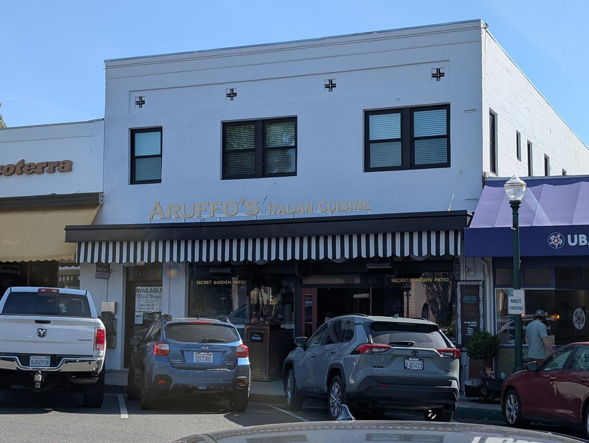
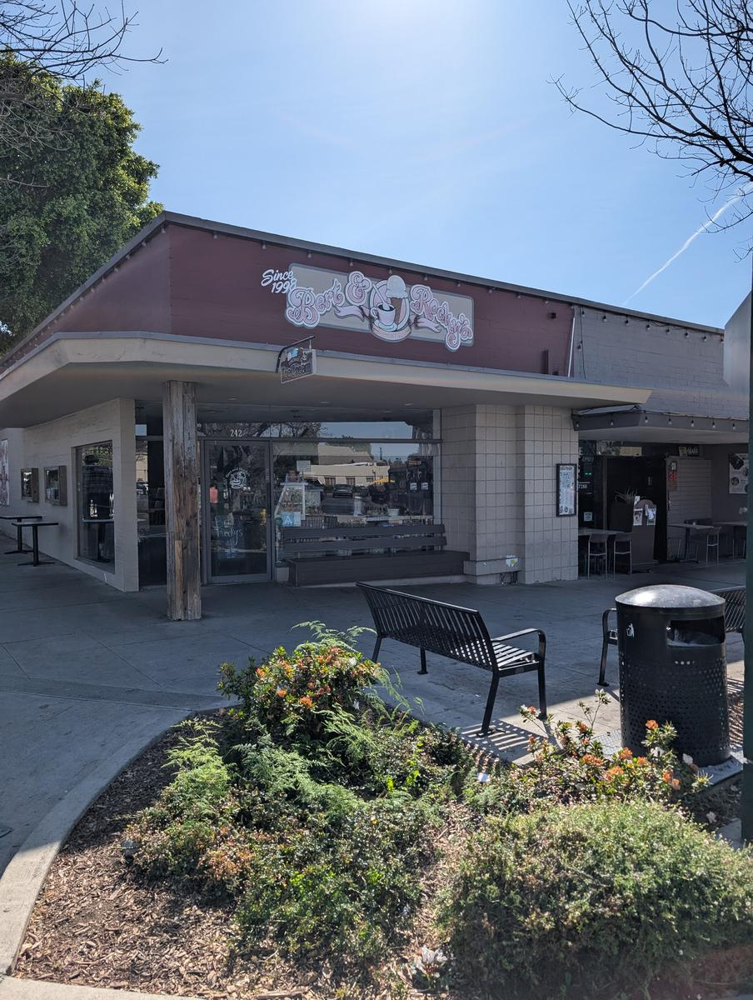

Claremont is a town designed for the leisurely stroll. When the parents visit, the pace shifts from campus coffee runs to indulgent multi-course meals — best enjoyed knowing the Village's walkable layout lets you wander off every decadent calorie under a canopy of trees.
Phase 1: The "Splurge" Dinner Staples
These are the restaurants where the atmosphere is as refined as the wine list. Clustered in the heart of the Village, they're just a short, scenic walk from the college gates.
Tutti Mangia Italian Chophouse
The heavyweight of Claremont fine dining. This white-tablecloth staple is where you go for Prime NY Striploin. Sophisticated and quiet, with a wine list that has earned multiple Wine Spectator Awards.
Aruffo's Italian Cuisine
For a more intimate, family-owned feel, Aruffo's is the move. Their Pappardelle Costolette (braised short rib) is a local legend. It feels like a high-end dinner in a cozy Italian villa.

The Quarter Creole Cuisine
Bring a piece of New Orleans to the Village. An intimate space known for its Gumbo, Catfish St. Charles, and incredible Crawfish Étouffée. Bold, soulful, and chef-driven.
Viva Madrid
A "splurge" for the senses. While the tapas offer variety, the real move is the Paella Mixta and a liter of their house Sangria. Tucked away in a charming alleyway, it feels like a European escape.
Phase 2: The "Sweet Send-Off"
After dinner, stroll the Village before dessert — everything's a five-minute walk.
Bert & Rocky's Cream Company
The quintessential Claremont dessert. An old-fashioned candy and ice cream shop that's perfect for a "walk and talk" through the Village. Nostalgia in a waffle cone.

Nobibi Ice Cream & Tea
For a modern finish, Nobibi is the current trendsetter. Known for high-end soft serve and "D'or" cones topped with 24K gold flakes — the ultimate "splurge" dessert for a parent visit.
Crepes of Wrath
Open late on weekends, this is the best alternative to ice cream. Their Sweet Nutella and Strawberry Crepes are the real stars of the post-dinner show — the perfect warm ending to the night.
Phase 3: The Farewell Brunch
Before the folks head out on Sunday, make their last memory of Claremont a sun-drenched morning. These spots are the perfect distance for a final walk from the dorms.
Bardot Restaurant
Chic and sophisticated, offering Steak Frites and Duck Confit Hunter's Waffles. The "Bottomless Rosé" headquarters of the Village.
Union on Yale
The premier spot for a relaxing morning. With its large outdoor patio and bocce ball court, it's a Village favorite. Don't miss the Lobster Benedict.
Gus's BBQ
A "Southern Hospitality" splurge. This is where you go for Rib Eye Steak & Eggs and their "Almost Famous" Cinnamon Skillet Bun.
Whisper House
Located in the historic Packing House, this speakeasy-themed spot offers a cool, industrial-chic vibe. Their Mimosa Flights are visual and culinary showstoppers.
The "Village Loop": Most of these restaurants are within a three-to-four block radius. Park the car at the beginning of the evening and you won't need it again until Monday morning.
Reservations: Tutti Mangia and Aruffo's are high-priority. Book at least two weeks out during graduation or family weekends to ensure you get a prime table.
Dress code: Smart casual across the board — nice enough to feel special, relaxed enough to enjoy yourself. No one's stuffy here.